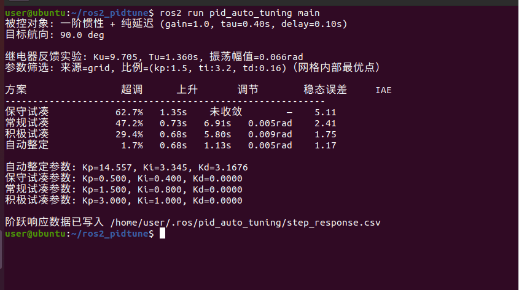
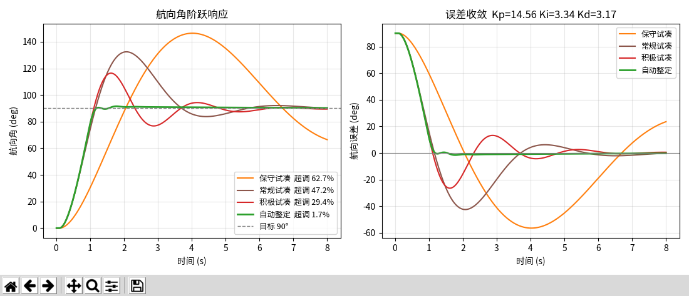
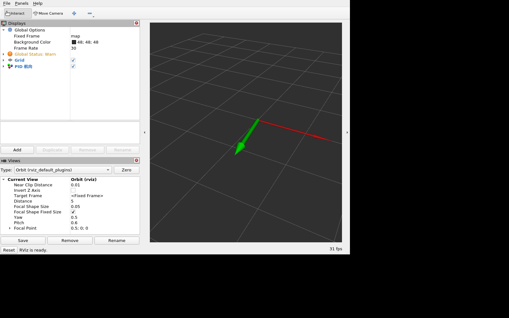

航向 PID 参数自整定与手工试凑对比
1. 模块概述
差速小车的航向环通常用 PID 控制，但 Kp/Ki/Kd 靠人工试凑很费时间，换一台车就要重新调。
本模块用继电器反馈法自动测量被控对象的临界增益 Ku 与临界振荡周期 Tu，
再按经验规则生成 PID 参数，并用闭环指标（超调、上升时间、调节时间、稳态误差、IAE）
在候选参数里挑选最优，最后与一组手工试凑参数在同工况下对比。
模块不依赖 MuJoCo / CARLA / Gazebo，被控对象是简化的一阶惯性 + 纯延迟航向模型：
d(omega)/dt = (K·u(t-τ) - omega) / T K = 1.0, T = 0.40 s, τ = 0.10 s
d(theta)/dt = omega
2. 运行环境
- 操作系统：Ubuntu 20.04（实测）
- ROS 版本：ROS 2 Humble
- Python：3.8（Ubuntu 20.04 自带版本）
- 依赖：
rclpy、std_msgs、visualization_msgs（ROS 2 Desktop 自带）；main_plot另需python3-matplotlib
Humble 的官方二进制包只面向 Ubuntu 22.04，而本模块实测所用的 Ubuntu 20.04 虚拟机是仓库提供的环境（已预装 ROS 2 Humble，属预装/源码编译方式）。复现时请使用该虚拟机；若改用 22.04 安装官方二进制，Python 版本为 3.10，其余步骤一致。
3. 编译与运行步骤
cd ~/ros2 # 仓库克隆目录，按实际路径调整
source /opt/ros/humble/setup.bash
colcon build --packages-select pid_auto_tuning
source install/setup.bash
运行单元测试（7 个用例，覆盖被控对象稳态、超调与调节检测、未收敛语义、上升时间缺失、负目标、继电器参数、参数生成与边界字段）：
colcon test --packages-select pid_auto_tuning
colcon test-result --verbose
一键跑完整流程（终端输出指标表，并把阶跃数据写入 ~/.ros/pid_auto_tuning/step_response.csv，可用 --output-dir 指定其他目录）：
ros2 run pid_auto_tuning main
绘制对比图（弹窗显示阶跃响应与误差收敛曲线，可直接截图）：
ros2 run pid_auto_tuning main_plot
可选：若环境中 rviz2 可用，可用箭头显示当前航向与目标航向。
cd ~/ros2 # rviz 配置使用相对路径时需在仓库根目录执行
ros2 launch pid_auto_tuning main.launch.py
rviz2 -d src/ground/pid_auto_tuning/resource/pid_tuning.rviz
# 或直接使用安装后的配置：
# rviz2 -d "$(ros2 pkg prefix pid_auto_tuning)/share/pid_auto_tuning/rviz/pid_tuning.rviz"
RViz 中 Fixed Frame 为 map，MarkerArray 话题为 /pid_auto_tuning/markers；绿色箭头是当前航向，红色箭头是目标航向，目标每 6 s 在 ±90° 之间切换。
4. 原理简述
- 继电器反馈实验：把控制器换成
±d的继电器，让闭环产生等幅振荡，记录振荡幅值a与周期Tu，由描述函数得Ku = 4d / (π·a) - 参数生成：用三条经典规则（Ziegler-Nichols 经典版 / 无超调版、Tyreus-Luyben）给出初值，其中
Ki = Kp / Ti、Kd = Kp·Td - 候选筛选：在
Ku、Tu附近做小范围网格搜索，用闭环指标打分（超调、调节时间、稳态误差、IAE 加权），取最优 - 对比：同一目标航向、同一被控对象下，与手工试凑参数（只加 P、I，没有微分项）比超调与调节时间
5. 参数说明
| 参数 | 默认值 | 说明 |
|---|---|---|
target_deg |
90.0 | 目标航向角（度） |
dt |
0.02 | 仿真步长（秒） |
switch_period |
6.0 | 目标航向切换周期（秒） |
u_limit |
2.5 | 角速度指令饱和上限（rad/s） |
注：第 6 节的指标表由 main 以 dt = 0.01 计算；上面 dt 是 RViz 节点的默认步长，同一组参数下节点侧的指标会与此表略有差异。节点启动时会校验参数，dt、switch_period、u_limit 需大于 0，target_deg 需在 (0, 180] 内，不满足时打印错误并以非零码退出。
6. 运行效果验证
ros2 run pid_auto_tuning main 的终端输出（航向角阶跃目标 90°；最后一行为 CSV 的绝对路径，默认位于 ~/.ros/pid_auto_tuning/）：
被控对象: 一阶惯性 + 纯延迟 (gain=1.0, tau=0.40s, delay=0.10s)
目标航向: 90.0 deg
继电器反馈实验: Ku=9.705, Tu=1.360s, 振荡幅值=0.066rad
参数筛选: 来源=grid, 比例=(kp:1.5, ti:3.2, td:0.16)（网格内部最优点）
方案 超调 上升 调节 稳态误差 IAE
----------------------------------------------------------
保守试凑 62.7% 1.35s 未收敛 — 5.11
常规试凑 47.2% 0.73s 6.91s 0.005rad 2.41
积极试凑 29.4% 0.68s 5.80s 0.009rad 1.75
自动整定 1.7% 0.68s 1.13s 0.005rad 1.17
自动整定参数: Kp=14.557, Ki=3.345, Kd=3.1676
保守试凑参数: Kp=0.500, Ki=0.400, Kd=0.0000
常规试凑参数: Kp=1.500, Ki=0.800, Kd=0.0000
积极试凑参数: Kp=3.000, Ki=1.000, Kd=0.0000
阶跃响应数据已写入 /home/user/.ros/pid_auto_tuning/step_response.csv

ros2 run pid_auto_tuning main_plot 的绘图窗口，左侧为航向角阶跃响应，右侧为航向误差收敛过程：

从结果看：三组手工试凑都只加 P、I，保守组超调 62.7% 且 8 s 仿真内未进入 ±2% 误差带，常规组超调 47.2%、调节 6.91 s，积极组超调 29.4%、调节 5.80 s； 自动整定在同等工况下把超调压到 1.7%，调节时间 1.13 s，稳态误差 0.005 rad。 该结论仅相对这三组手工参数成立，不构成对所有手工调参的普遍论断；网格上界已扩到 1.75Ku / 4.5Tu，最优点（kp = 1.5Ku、Ti = 3.2Tu）已进入内部，换对象后仍应复核是否压在边界。
ros2 launch pid_auto_tuning main.launch.py 配合上面的 rviz2 命令，可以看到 RViz 中的网格与航向箭头，绿色为当前航向、红色为目标航向：

7. 指标定义
| 指标 | 定义 | 单位 |
|---|---|---|
| 超调量 | (峰值 - 目标值) / 目标值 × 100% |
% |
| 上升时间 | 响应从 10% 到 90% 目标值所用时间 | s |
| 调节时间 | 最后一次超出 ±2% 误差带之后的时间；仿真结束仍未进入误差带记为「未收敛」 | s |
| 稳态误差 | 末段 5% 样本均值与目标值之差；未收敛时不输出 | rad |
| IAE | 绝对误差积分 Σ|e|·dt |
rad·s |
整定与对比在 main 的一次运行内完成：继电器实验按 60 s 仿真时长采集振荡，随后做候选参数网格搜索与四组闭环仿真（三组手工参数 + 自动整定），无需人工干预。
8. 简化假设
- 被控对象为一阶惯性 + 纯延迟的航向模型，不含轮胎侧偏、道路坡度与侧风
- 仅在仿真与离线计算中验证，没有上真车
- 控制量按角速度指令饱和处理，未建模电机死区
- 未做对象参数摄动（K、T、τ ±20%）的鲁棒性验证，「换对象后重新整定」的效果未在摄动对象上复核
main_plot弹窗依赖 python3-tk（matplotlib 默认 Tk 后端）；系统无中文字体（如 Noto Sans CJK）时图中中文显示为方块